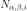
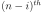
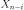
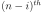
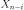
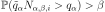
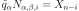
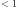
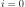

Wilks¶
-
class
Wilks(*args)¶ Class to evaluate the Wilks number.
Refer to Estimating a quantile by Wilks’ method.
Parameters: - randomVector :
RandomVectorof dimension 1 Output variable of interest.
Notes
This class is a static class which enables the evaluation of the Wilks number: the minimal sample size  to perform in order to guarantee that the empirical quantile
 , noted
, noted
 evaluated with the
 maximum of the sample, noted  be greater
than the theoretical quantile
evaluated with the
 maximum of the sample, noted  be greater
than the theoretical quantile  with a probability at least
with a probability at least
 :
:
where .
Methods
ComputeSampleSize(quantileLevel, confidenceLevel)Evaluate the size of the sample. computeQuantileBound(quantileLevel, …[, …])Evaluate the bound of the quantile. getClassName()Accessor to the object’s name. -
__init__(*args)¶ Initialize self. See help(type(self)) for accurate signature.
-
static
ComputeSampleSize(quantileLevel, confidenceLevel, marginIndex=0)¶ Evaluate the size of the sample.
Parameters: - alpha : positive float 
The order of the quantile we want to evaluate.
- beta : positive float
Confidence on the evaluation of the empirical quantile.
- i : int
Rank of the maximum which will evaluate the empirical quantile. Default  (maximum of the sample)
Returns: - w : int
the Wilks number.
-
computeQuantileBound(quantileLevel, confidenceLevel, marginIndex=0)¶ Evaluate the bound of the quantile.
Parameters: - alpha : positive float
The order of the quantile we want to evaluate.
- beta : positive float
Confidence on the evaluation of the empirical quantile.
- i : int
Rank of the maximum which will evaluate the empirical quantile. Default (maximum of the sample)
Returns: - q :
Point The estimate of the quantile upper bound for the given quantile level, at the given confidence level and using the given upper statistics.
-
getClassName()¶ Accessor to the object’s name.
Returns: - class_name : str
The object class name (object.__class__.__name__).
- randomVector :